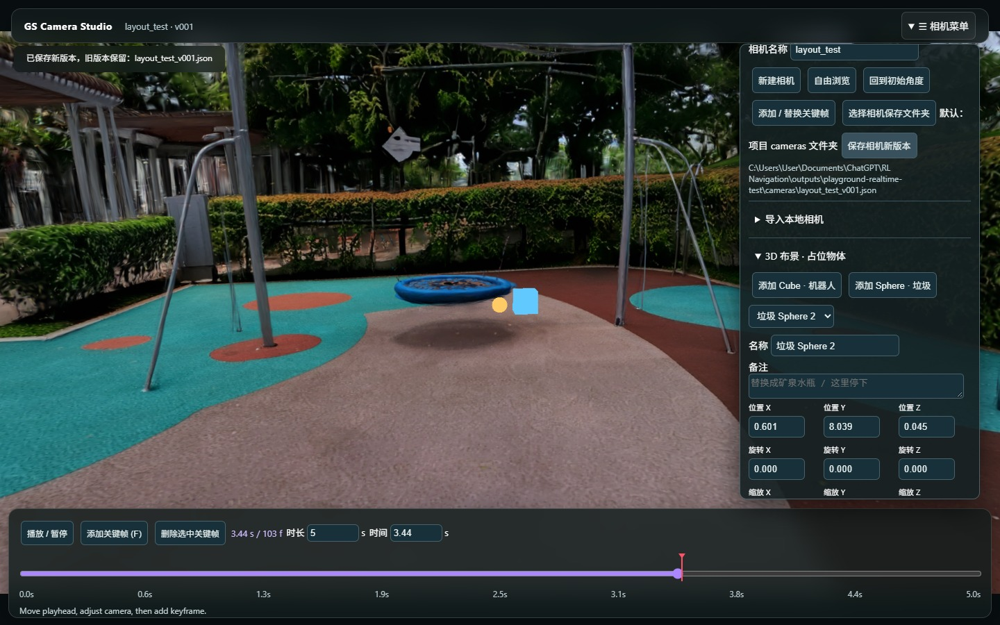
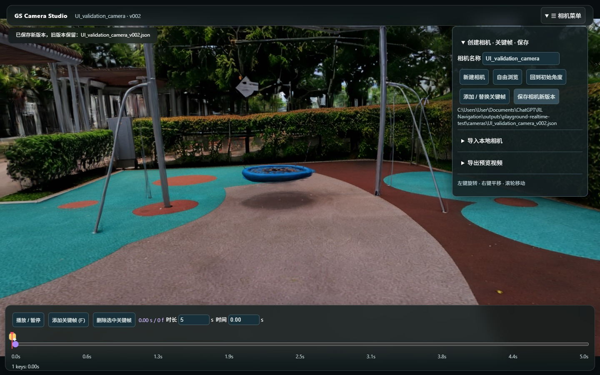

我只是想试一个镜头，不想先等渲染
我做特效。移动相机、摆一个粗略的物体、测试节奏、留下一条备注，这些本来都是构思镜头时很普通的动作。但开始用 Gaussian Splat 环境之后，这些动作反而变得很别扭。
在我当时使用的 Blender GS 渲染流程里，CPU 端的 splat 排序让反复调整相机、导出帧的速度太慢。早期 previs 连镜头是否成立都还没决定，我不想每改一下构图就等那么久。
我试过的 World Labs viewer 和 GitHub 开源 GS browser 很适合浏览重建环境，但我没有找到把 guided geometry、相机关键帧和导演备注结合起来、可以直接拿来做 previs 的工具。对于有 VFX 背景的我，这真的很痛苦。所以我决定自己做一个。
一个用浏览器表达空间意图的小工具
我用 Three.js 和 Spark 做了一个自定义 GS previs 工具。加载 Gaussian Splat 环境后，就能直接开始构思：
- 移动相机、保存关键帧、回放相机动画。
- 加入简单 proxy geometry，确定布局、尺度和空间关系。
- 先做 proxy 动画，不必一开始就准备最终资产。
- 在特定时间点写备注，导出预览。
- 把相机、物体变换、时间和备注保存成结构化场景数据。

直接做 blocking，给 agent 一个具体的起点
视频告诉别人我想表达什么，场景数据则给 agent 一个可以继续工作的起点。我不必一直写 prompt 描述某个东西该放在哪里，而是直接把这个决定做出来。
接下来可以通过 MCP 和 Blender 准备环境、整理碰撞几何，把 proxy 替换成适合模拟的资产，再把机器人和道具带入 Isaac Sim。这是在传递意图，不是说所有 proxy 都能自动变成最终生产资产。

快到足够让我再试一个想法
这个游乐场来自一张用旧相机拍摄的全景图。在这个例子里，从生成环境到做出 previs，不到十分钟。GS 重建并不完美，但足够帮助我决定构图、运动和节奏。
另一次五秒、1920 × 1080、只渲染 GS 背景的 Spark 测试，在这台机器上约有每秒 60 次绘制回调，浏览器录制约 29 fps。这说明浏览器方向值得继续，但并不证明录制逐帧精确，或 GS 与 mesh 的最终混合渲染已经全部验证完成。
我想要的流程是：散步时采集，喝咖啡时摆镜头和道具，准备好后再交给生产工具。手机友好的使用方式是目标，并不是说完整机器人模拟已经能在 iPhone 上运行。
Previs 不会决定机器人实际怎么走
短短几秒的 proxy 动画只是表达想法。机器人的速度是多少、路线能不能走、能不能避开障碍，都要放到模拟里验证。模拟的时长也不该受这个五秒镜头限制。
后面我仍然需要 DCC 的精度。但在最开始，我希望更多时间用来塑造想法，少一点时间搭场景、解释物体该放在哪里。人直接操作，agent 接收结构化意图。